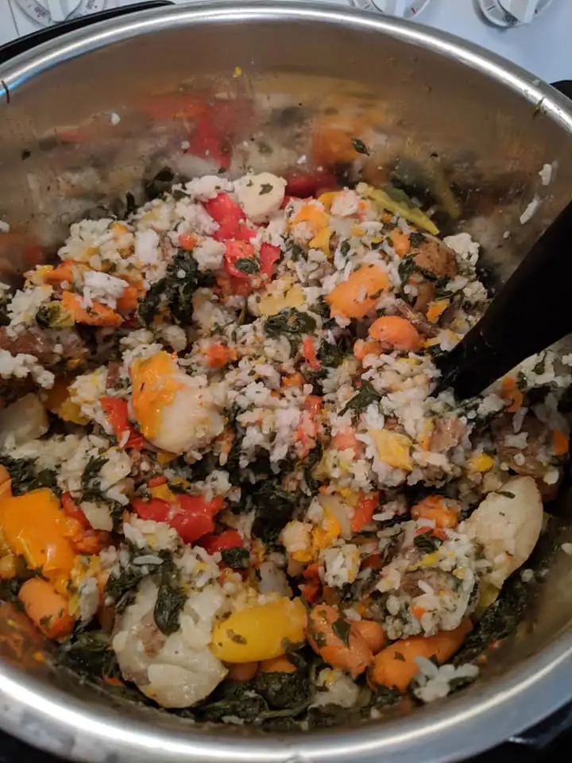

Monster Mash Recipe

This meal is a staple in Stan Efferding's
book 'The Verticle Diet'. It is a simple way to
maximize calories and protein, but keep digestability.
Ingredients
- Ground Bison
- Bell Peppers
- Spinach
- Rice
- Bone Broth
- Spices and seasoning
Steps
- Cook the Rice
- Cook the Veggies
- Grill the ground beef
- Combine ingredients
- add Bone Broth for digestability
Home Page
Previous Recipe
Next Recipe